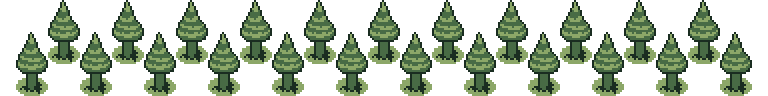

Pretzels
April 18, 2026
I like pretzels. They are a good food.
- They are savory, but not greasy like typical chips.
- They are generally a consistent size and shape, and not too messy. This combination of features makes them an ideal snack to consume while operating a vehicle - they can be eaten without distracting from driving.
- They taste better than key.
- If I could eat pretzels for every meal of the day, I would not do that because that would be unhealthy.

 Forest
Forest